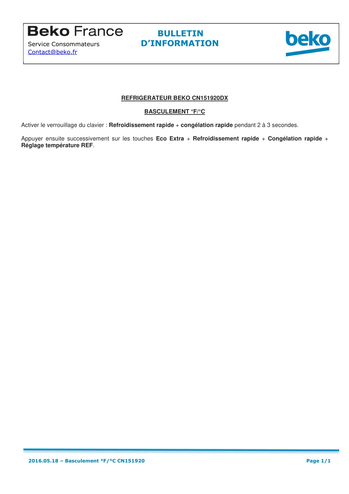

Réglage °F/°C sur CN151920DX

REFRIGERATEUR BEKO CN151920DXBASCULEMENT °F/°CActiver le verrouillage du clavier : Refroidissement rapide + congélation rapide pendant 2 à 3 secondes.Appuyer ensuite successivement sur les touches Eco Extra + Refroidissement rapide + Congélation rapide +Réglage température REF.BULLETINService Consommateurs D’INFORMATIONContact@beko.fr2016.05.18 – Basculement °F/°C CN151920Page 1/1
1 / 1